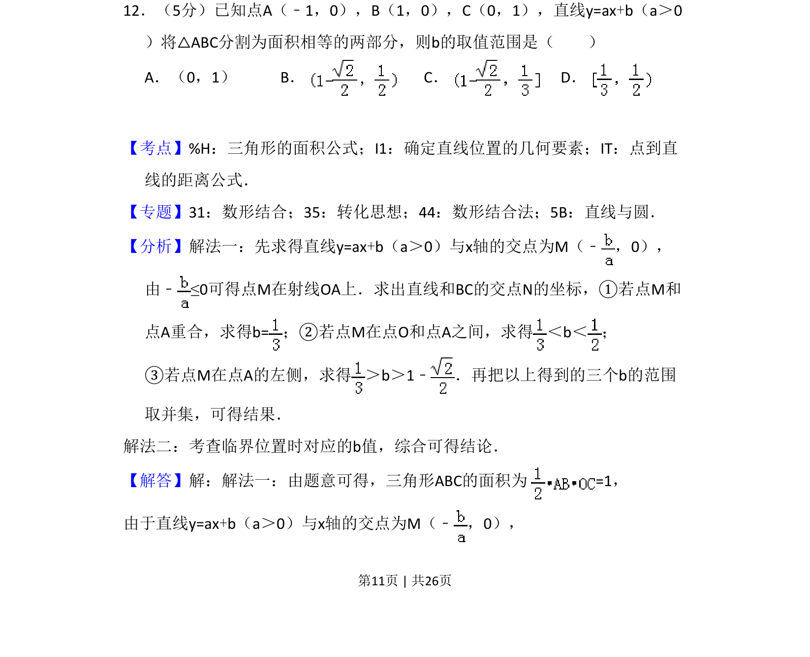
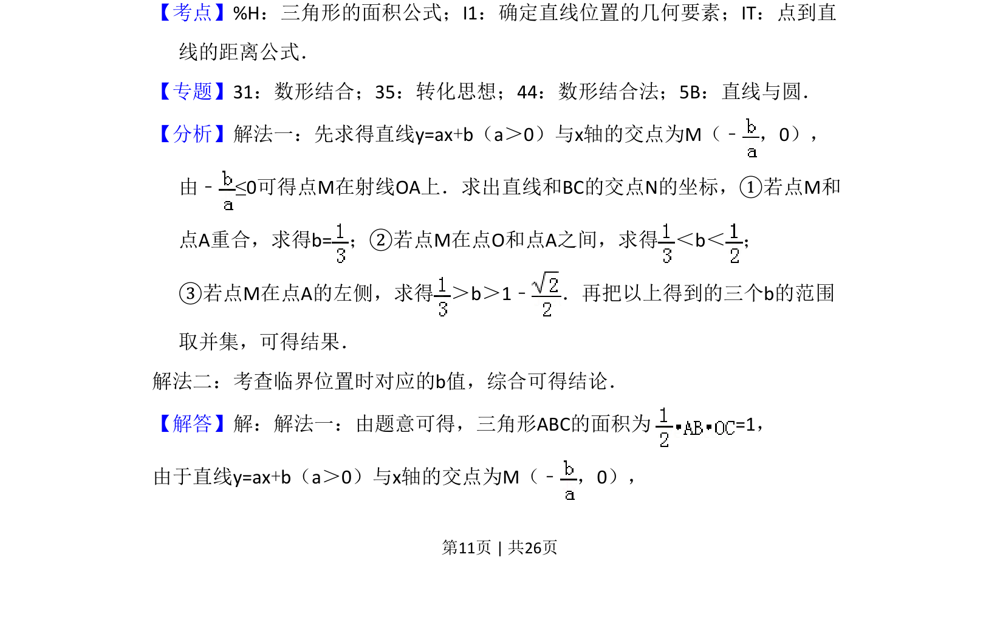
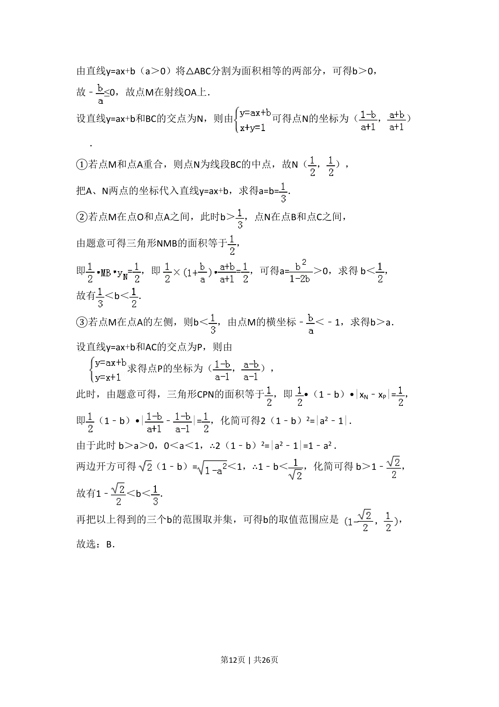
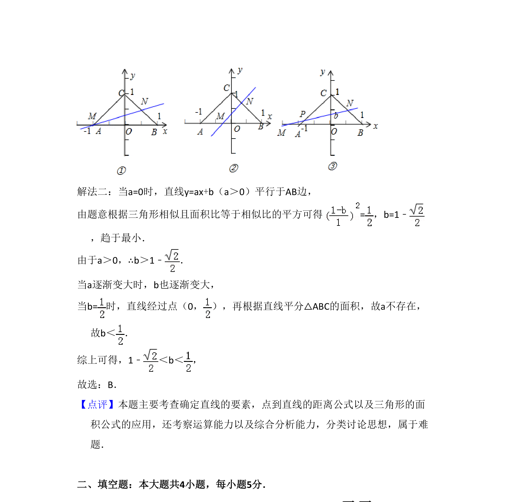

考点：三角形面积 确定直线位置的几何要素 点到直线距离公式

考查含参数直线分割三角形为面积相等的两部分，求参数b的取值范围。



📄 原 PDF 第 11 页：
素材/真题/吉林/2008-2024·（吉林）数学高考真题/2013年高考数学试卷（理）（新课标Ⅱ）（解析卷）.pdf
12．（5分）已知点A（﹣1，0），B（1，0），C（0，1），直线y=ax+b（a＞0 ）将△ABC分割为面积相等的两部分，则b的取值范围是（ ） A．（0，1）B．C．D．
【考点】%H：三角形的面积公式；I1：确定直线位置的几何要素；IT：点到直 线的距离公式．菁优网版权所有 【专题】31：数形结合；35：转化思想；44：数形结合法；5B：直线与圆． 【分析】解法一：先求得直线y=ax+b（a＞0）与x轴的交点为M（﹣ ，0）， 由﹣≤0可得点M在射线OA上．求出直线和BC的交点N的坐标，①若点M和 点A重合，求得b=；②若点M在点O和点A之间，求得 ＜b＜ ； ③若点M在点A的左侧，求得 ＞b＞1﹣ ．再把以上得到的三个b的范围 取并集，可得结果． 解法二：考查临界位置时对应的b值，综合可得结论． 【解答】解：解法一：由题意可得，三角形ABC的面积为 =1， 由于直线y=ax+b（a＞0）与x轴的交点为M（﹣ ，0），